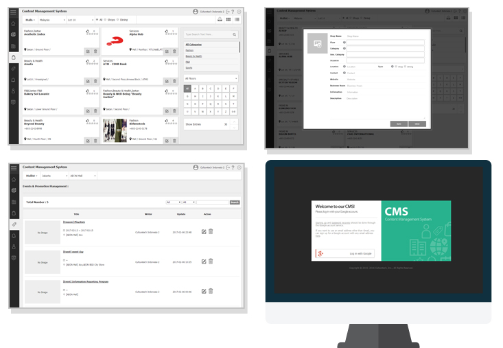

<section class="sub-section" id="about"><!--main-section-start-->

	<div class="container"> 
        <section id="single" >
            <h4 data-control class="sub_depth2_title curs_point mar_b_0">Content Management System</h4>
			<h5 class="sub_depth2_title curs_point mar_b_0">Quickly and efficiently manage your maps</h5>
		</section>
    	<div class="row">
			<div class="col-sm-6">
            	<div class="sub_txt">
                    <ul>
						<P> <br>The Docent Content Management System allows venues, from retailers to theme parks, to quickly update their visitor maps without the assistance of a developer or creating a whole new map. Establishments such as museums, theme parks, shopping malls, and performing arts centers from around the world have used our Content Management System to, with just the click of a button:</P>
						<ul style="margin-top:20px">
							Add or delete a shop<br>
							Move a shop's location on the map<br>
							Edit or update a shop's information<br>
							Edit current content or restore previous versions<br>
							Manage promotions<br>
							Manage special events<br>
						</ul>
					</ul>
				</div>
            </div>
            <figure class="col-sm-6  text-center">
            	
            </figure>
        </div>
	</div> 
</section><!--main-section-end-->